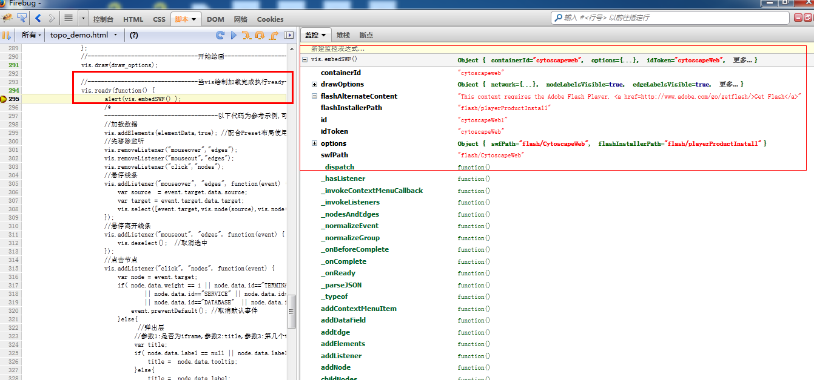

现将Visualization(就是我们的vis对象)提供的所有api整理如下,按照官网提供的字母顺序书写
vis.ready(function () {
vis.addContextMenuItem("Select first neighbors", "nodes",
function (evt) {
// Get the right-clicked node:
var rootNode = evt.target;
// Get the first neighbors of that node:
var fNeighbors = vis.firstNeighbors([rootNode]);
var neighborNodes = fNeighbors.neighbors;
// Select the root node and its neighbors:
vis.select([rootNode]).select(neighborNodes);
}
);
});
//1 给节点和连线都绑定
var field = { name: "url", type: "string", defValue: "http://cytoscapeweb.cytoscape.org/" };
vis.addDataField(field);
//2 只给节点绑定
var field = { name: "score", type: "number", defValue: 0.15 };
vis.addDataField("nodes", field);
//配置的数据
var data = { id: "e10", //必须拥有的字段
source: "n1", //必须拥有的字段
target: "n4", //必须拥有的字段
directed: false, //必须拥有的字段,是否有箭头
label: "Co-expression", //自定义字段配置,可灵活配置
weight: 0.88 }; //自定义字段配置,可灵活配置
///*返回添加完的连线*/
var edge = vis.addEdge(data, true/*这个值的意思是,true立刻渲染,false不立刻渲染,循环的时候比较有用,当遍历到最后一个的时候设为true一起绘制出来*/);
这个方法可以设置x,y,一般第一次加载使用addElements比较方便
// 1. 只添加节点,并且id自动(flex自己来控制了,建议自己起个id,这样规则自己清楚,写个小算法,比较容易控制节点)
var nodesArray = [ { group: "nodes", x: 10, y: 35 },
{ group: "nodes", x: 20, y: 70 } ];
var nodes = vis.addElements(nodesArray, true/*true立刻渲染,false不立刻渲染*/);
// 2. 牛逼就牛逼在这里了,可以既添加node,也可以添加edge
var array = [ { group: "nodes", x: 10, y: 35, data: { id: "n01" } },
{ group: "nodes", x: 20, y: 70, data: { id: "n02" } },
{ group: "edges", data: { source: "n01", target: "n02" } } ];
var elements /*返回添加完的元素*/ = vis.addElements(array, true/*true立刻渲染,false不立刻渲染*/);
//监听控制台的缩放/放大
vis.addListener("zoom", function(evt) {
var zoom = evt.value;
alert("New zoom value is " + (zoom * 100) + "%");
})
//监听点击连线
.addListener("click", "edges", function(evt) {
var edge = evt.target;
alert("Edge " + edge.data.id + " was clicked");
})
//监听选中节点
.addListener("select", "nodes", function(evt) {
var nodes = evt.target;
alert(nodes.length + " node(s) selected");
});
// 添加一个node1节点
var data = { id: "n4", //必须拥有的字段,不配置flex也会auto的,为了正常使用,建议必填
label: "MYO2 (Yeast)",//自定义字段配置,可灵活配置
weight: 0.54 }; //自定义字段配置,可灵活配置
var node1 /*返回添加完的节点*/ = vis.addNode(240/*X坐标*/, 360/*Y坐标*/, data, true/*true立刻渲染,false不立刻渲染*/);
// 将node2加入到node1里面,node1将包含node2
var node2 /*返回添加完的节点*/ = vis.addNode(node1.x, node1.y, { parent: "n4" }, true/*true立刻渲染,false不立刻渲染*/);
//引用上一个例子
var data = { id: "n4", //必须拥有的字段,不配置flex也会auto的,为了正常使用,建议必填
label: "MYO2 (Yeast)",//自定义字段配置,可灵活配置
weight: 0.54 }; //自定义字段配置,可灵活配置
var node1 /*返回添加完的节点*/ = vis.addNode(240/*X坐标*/, 360/*Y坐标*/, data, true/*true立刻渲染,false不立刻渲染*/);
//使用方式
var childNodes = vis.childNodes(node1/*节点对象,或者 node1.id也行*/);
vis.customCursorsEnabled(false /*不启用*/ or true /*启用*/ );
var schema = vis.dataSchema(); //取得了 var nodeFields = schema.nodes; //节点的自定义字段(返回是数组) var edgeFields = schema.edges; //连线的自定义字段(返回是数组)
deselect ( gr /*nodes or edges*/, items /*取消选中的元素或者元素id*/ )
// a) 取消连线id在ids里面的:
var ids = [4,6,21];
vis.deselect("edges", ids);
// b) 取消所有连线选中的第一个
var e = vis.selected("edges")[0]; //最后加个判断,选中的连线为0就尿了;
vis.deselect([e]);
// c) 取消选中节点和连线的第一个
var n = vis.selected("nodes")[0];
var e = vis.selected("edges")[0];
vis.deselect([n,e]);
// d) 取消选中的所有节点
vis.deselect("nodes");
// e) 取消选中的所有连线
vis.deselect("edges");
// f) 取消选中的所有节点和连线
vis.deselect();
vis.draw({
network: '<graphml>...</graphml>' or json, 数据源
visualStyle: 参考样式章节
layout: 参考布局章节
nodeLabelsVisible: 是否显示节点标签
edgeLabelsVisible: 是否显示连线标签
nodeTooltipsEnabled: 是否显示节点悬停提示
edgeTooltipsEnabled: 是否显示连线悬停提示
edgesMerged: 取消线的样式
panZoomControlVisible 控制台是否显示
panZoomControlPosition 控制台的位置
preloadImages 预加载图像
//官网遗漏的api-------------
//http://cytoscapeweb.cytoscape.org/documentation/visualization#section/org.cytoscapeweb.Visualization
mouseDownToDragDelay 在flex屏幕按住鼠标左键,可以拖拽屏幕,设置-1是取消,400,800是按住鼠标左键的毫米数
panEnabled 点击节点,是否可以拖动关联节点的所以节点,
});
var edge = vis.edge("e10");
vis.edgeLabelsVisible(false or true);
vis.edges();
//例: 2个节点之间多根连线将合并成一根,并且样式只剩下颜色,粗细,没有箭头
vis.edgesMerged(false or true);
vis.edgeTooltipsEnabled(false or true);
vis.ready(function() {
alert(vis.embedSWF() );
});

exportNetwork ( format, url, [ options ] )
format {String} : One of: "png", "svg", "pdf", "xgmml", "graphml", "sif". //格式化类型
url {String} : 导出后的接收地址
[ options ] {Object}
width: 所需的图象的像素宽度（仅为PDF格式）。
height: 所需的高度的图像中的像素（仅为PDF格式）。
nodeattr：可选的节点的属性名称作为出口节点（仅为SIF SIF格式）。
interactionattr：可选的边缘属性名称作为出口SIF互动（仅用于“SIF格式）。
window: HTML浏览器窗口或框架中显示输出图像或XML,
_self：当前窗口中的当前帧。
_blank：一个新的窗口。
_parent：当前框架的父。
_top：在当前窗口的顶层框架。
默认 _self.
JS部分
vis.exportNetwork('xgmml', 'export.php?type=xml'); //设置类型
后台PHP部分(参考)
<?php
# ##### The server-side code in PHP ####
# Type sent as part of the URL:
$type = $_GET['type']; //取得类型
# Get the raw POST data:
$data = file_get_contents('php://input'); //取得post表单内容
# Set the content type accordingly:
if ($type == 'png') {
header('Content-type: image/png');
} elseif ($type == 'pdf') {
header('Content-type: application/pdf');
} elseif ($type == 'svg') {
header('Content-type: image/svg+xml');
} elseif ($type == 'xml') {
header('Content-type: text/xml');
} elseif ($type == 'txt') {
header('Content-type: text/plain');
}
# To force the browser to download the file: //设置头部
header('Content-disposition: attachment; filename="network.' . $type . '"');
# Send the data to the browser:
print $data; //返回页面内容
?>
// 1. 仅显示所有权重大于等于0.4的
vis.filter("edges", function(edge) {
return edge.data.weight >= 0.4;
}, true/*true立刻渲染,false不立刻渲染*/);
// 2. 仅显示id等于n01,n02的节点
vis.filter("nodes", ['n01', 'n02']);
// 3. 隐藏所有节点,当然还有连线
vis.filter("nodes", []);
// 4. 隐藏所有节点
vis.filter();
//firstNeighbors ( nodes, [ ignoreFilteredOut ] )
nodes {Array} : 节点对象数组或者节点id数组
[ ignoreFilteredOut ] {Boolean} : true配合上面的filter使用,忽略已经过滤的,默认为false
vis.firstNeighbors(['node1','node2']);
例子:
A--->B
A--->C
C--->D
var neighborNode = vis.firstNeighbors(["A"], false);
//返回对象有下面4个属性
neighborNode.rootNodes //传递参数节点(就是A)
neighborNode.neighbors //获取A的所有邻居节点(B节点,C节点),因为只取第一层,所以D落选了
neighborNode.edges //获取A的所有连线(A->B,A->C 2根线)
neighborNode.mergedEdges //获取A的所有连线(A->B,A->C 2根线),针对合并线使用
vis.graphml(); graphml格式参考如下: <graphml> <!-- 设置自定义属性*******节点******* --> <key id="label" for="node" attr.name="label" attr.type="string"/><!--显示标签 --> ..... <!-- 设置自定义属性*******连线******* --> <key id="label" for="edge" attr.name="label" attr.type="string"/><!--显示标签 --> ..... <graph edgedefault="undirected"><!-- 透过这个变量设定连线方向 directed有方向,undirected无方向--> <!-- 设置节点数据 --> <node id="a01"><data key="label">A01</data><data key="imgtype">img/node1.png</data><data key="x">100</data><data key="y">100</data></node> ..... <!-- 设置连线数据 --> <edge target="a01" source="a02" directed="false"><data key="weight">2</data><data key="label">a01 (15) a02</data></edge> ..... </graph> </graphml>
val bool = vis.hasListener("click","nodes"); //节点
val bool = vis.hasListener("click","edges"); //连线
val bool = vis.hasListener("click","none"); //全局面板
val bool = vis.hasListener("click"); //全局面板
// 2. 取得布局
var layout = vis.layout(); // returns: { name: 'Circle', options: { angleWidth: 360 } };
// 3. 设置布局:
vis.layout('ForceDirected');
// 4. 带参数设置布局:
var options = {
drag: 0.2,
gravitation: -200,
minDistance: 1,
maxDistance: 400,
mass: 2,
tension: 0.2,
weightAttr: "weight",
restLength: 100,
iterations: 200,
maxTime: 10000,
autoStabilize: false
};
vis.layout({ name: 'ForceDirected', options: options });
var edges = vis.mergedEdges();
var data = vis.networkModel();
var node = vis.node("n4"); //参数为节点id
vis.nodeLabelsVisible(true or false);
nodes ( [ topLevelOnly ] ) topLevelOnly: true返回第一层节点,隐藏子节点, 默认false, 返回全部节点. vis.nodes(); vis.nodes(true);
vis.nodeTooltipsEnabled(false or true);
vis.panBy(500,0); //水平左移500px vis.panBy(-500,0); //水平右移500px vis.panBy(0,200); //垂直上移200px vis.panBy(0,-200); //垂直下移200px
//经过测试,貌似这个方法不可用,panEnabled应该是在vis.draw()里面配置的. vis.panEnabled(false or true);
vis.panToCenter();
vis.panZoomControlVisible(false or true);
vis.parentNodes();
pdf ( [ options ] ) //字符串的二进制数据编码为base64字符串
[ options ] {Object} : Additional options:
width: 所需的图象的像素宽度。
height: 所需的图象的像素高度。
//字符串的二进制数据编码为base64字符串
vis.ready(function () {
// 执行的交互操作,或者监听事件
var nodes = vis.nodes();
// and so on...
});
vis.removeAllContextMenuItems();
//绑定
vis.addContextMenuItem("Delete node", "nodes", function(evt) { //右击节点,出现删除节点菜单
vis.removeNode(evt.target.data.id, true);
});
//移除
vis.removeContextMenuItem("Delete node", "nodes");
// 1: 删除节点和连线的url字段
vis.removeDataField("url");
// 2: 只删除连线的url字段
vis.removeDataField("edges", "url");
// 1. 删除连线数组的第一个连线:
var edge = vis.edges()[0];
vis.removeEdge(edge,true/*true立刻渲染,false不立刻渲染*/);
// 2. 删除id为e101的连线:
vis.removeEdge("e101",true/*true立刻渲染,false不立刻渲染*/);
// 1. 删除连线:
vis.removeElements("edges", ["1", "2", "5"]);
// 2. 删除节点和连线:
var nodes = vis.nodes();
var edges = vis.edges();
vis.removeElements([nodes[0], nodes[1], edges[0]], true/*true立刻渲染,false不立刻渲染*/);
// 3. 删除所有连线
vis.removeElements("edges");
// 4. 删除所有节点和连线
vis.removeElements();
vis.removeFilter("edges",false/*true立刻渲染,false不立刻渲染,默认false*/);
vis.removeFilter("nodes",false/*true立刻渲染,false不立刻渲染,默认false*/);
vis.removeFilter();//同时删除edges和nodes
vis.removeListener("click","nodes");
var node = vis.nodes()[0];
vis.removeNode(node);
vis.removeNode("n3");
addEdge 添加连线
// a) 选中节点:
var ids = [1,3,5,10];
vis.select("nodes", ids);
// b) 选中第一个节点:
var n = vis.nodes()[0];
vis.select([n]);
// c) 选中第一个节点和第一个连线:
var n = vis.nodes()[0];
var e = vis.edges()[0];
vis.select([n,e]);
// d) 选中所有节点:
vis.select("nodes");
// e) 选中所有连线:
vis.select("edges");
// f) 选中所有节点和连线:
vis.select();
vis.selected();
vis.selected("nodes");
vis.selected("edges");
vis.sif(); //return {String} The SIF text. 返回string字符串
svg ( [ options ] )
[ options ] {Object} : Additional options:
width: 所需的图象的像素宽度。
height: 所需的图象的像素高度。
vis.swf();
// 1: 更新第一个节点:
var n = vis.nodes()[0];
n.data.label = "New Label...";
n.data.weight *= 2;
vis.updateData([n]);
// 2: 更新第一个和第二个节点和第一个连线:
var nodes = vis.nodes();
var n1 = nodes[0];
var n2 = nodes[1];
n1.data.label = "New Label for N1";
n2.data.label = "New Label for N2";
var e = vis.edges[0];
e.data.weight = 0.8;
vis.updateData([n1, n2, e]);
// 3: 更新连线id数组里的连线, 数据为data对象,
// setting the same values to all of them:
var edge_ids = ["1","3","7"];
var data = { weight: 0.5, interaction: "pp" };
vis.updateData("edges", edge_ids, data);
// 4: 更新id数组内的节点和连线,数据为data对象
var ids = ["n1","n2","e7","e10"];
var data = { weight: 0 };
vis.updateData(ids, data);
// 5: 更新所有的节点和连线,数据为data对象:
var data = { weight: 0 };
vis.updateData(data);
//取得
var style = vis.visualStyle();
//设置
var style = {
global: {
backgroundColor: "#000000"
},
nodes: {
color: "#ffffff",
size: 40
}
};
vis.visualStyle(style);
// 选中的节点和连线:
var selected = vis.selected();
//初始样式对象
var bypass = { nodes: { }, edges: { } };
//初始要修改的样式
var props = {
labelFontSize: 16,
labelFontColor: "#ff0000",
labelFontWeight: "bold"
};
//循环赋值
for (var i=0; i < selected.length; i++) {
var obj = selected[i];
//往样式对象里添加
bypass[obj.group][obj.data.id] = props;
}
vis.visualStyleBypass(bypass); //最后一步,设置动态样式
//如果觉得上面有点绕,看下面
var bypass = {
nodes: {
"1": { color: "#ff0000", opacity: 0.5, size: 32 },
"3": { color: "#ffff00", opacity: 0.9 },
"7": { color: "#ffff00", opacity: 0.2 }
},
edges: {
"22": { width: 4, opacity: 0.2 },
"23": { width: 4, opacity: 0.2 }
}
};
这是最后封装成的格式样子
vis.xgmml(); {String} The XML text. 返回字符串
zoom ( [ scale ] )
[ scale ] {Number} : Value between 0 and 1. 值为0到1之间的数字
//取值
vis.zoom();
//赋值
vis.zoom(0.5); //缩小1半
vis.zoomToFit();
//由于没有返回值,可以添加监听,来取得缩放比例值.
var scale;
vis.addListener("zoom", function(evt) {
scale = evt.value;
});